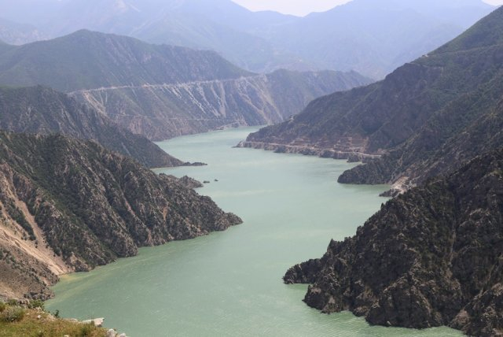

Le nom de Pamukkale signifie “château de coton” en turc et c’est vrai que ça y ressemble pas mal. Cette étrange “cascade blanche” est à la base un phénomène 100% naturel. Déjà à la période romaine, ces grands bassins étaient utilisés pour le bain… Hierapolis a d’ailleurs été construit à côté de ce site naturel qui existait déjà à l’époque (on parle d’il y a plus de 2000 ans quand même).
image prise sur www.opnminded.comCette splendide rivière du nord-est du pays présente un des débits les plus puissants au monde ; sauvage et reculé, l’endroit permet aux plus téméraires venus visiter la Turquie, d’aller y faire du rafting ou du kayak.
 image prise sur www.sondakika.comLorsqu’on cherche que faire en Turquie, on peut s’arrêter dans cette réserve protégée aux collines multicolores, abritant des centaines d’espèces de volatiles ! Situé en plein sur la Route de la Soie, cette zone est assurément un immanquable touristique dans ce pays.
 image prise sur www.lutarsturizm.com
image prise sur www.lutarsturizm.com
Cette petite île inhabitée est située près du village de Simena. On y trouve de jolies plages mais également les vestiges d’une ancienne cité, Apollonia, qui fut détruite par un tremblement de terre il y a plus de 1800 ans.. et qui, aujourd’hui se trouve sous les flots. Dans cette zone protégée, il est tout à fait interdit de pratiquer la plongée sous-marine afin d’éviter les pillages de ce site unique, mais il sera fort agréable de vous prélasser sur le sable et de faire le tour de l’île en bateau voire en kayak.
image prise sur www.Wikimapia.orgCette montagne est la plus haute de l’Ouest turc ; en outre, il vous sera possible de profiter des joies de la glisse, une station y étant installée. Mais le site est aussi connu pour ses rapaces, sa faune et sa flore extraordinaire, et présente l’avantage d’être facilement accessible depuis la ville de Bursa, toute proche : deux téléphériques assurent la liaison directe avec cette station d’altitude qui n’a rien à envier à vos domaines skiables favoris. Un must, lorsqu’on vient visiter la Turquie !
 image prise sur www.memphistours.com
image prise sur www.memphistours.com
Il s’agit bel et bien d’une des plus belles plages de Turquie : longue de près de vingt kilomètres, la plage de Patara borde un site archéologique renommé, librement accessible et dont les ruines sont toujours en cours d’exploration. Pas d’hôtel à proximité, l’endroit est une bulle de nature dans la Riviera turque !
image prise sur www.enkisa.comIstanbul, métropole gigantesque, est scindée en deux par le Bosphore : frontière entre deux mers, et deux continents. Si vous venez visiter la Turquie et que vous êtes à Istanbul, il y a de fortes chances pour que vous vous rendiez sur les rives de ce détroit mythique.
 image prise sur www.lemonde.fr
image prise sur www.lemonde.fr
Aussi surnommées « demoiselles coiffées« , les colonnes rocheuses façonnées par l’érosion de Cappadoce sont une attraction touristique majeure, qui s’insèrent dans un paysage multicolore. Ici, on peut apercevoir d’étranges habitats troglodytes, incrustées dans les rochers !
image prise sur www.tatilesintisi.comLe site antique d’Éphèse abrite les ruines du temple d’Artémis : une des sept merveilles du monde. On peut aussi y découvrir la spectaculaire bibliothèque de Celsius et d’autres attractions époustouflantes !
 image prise sur www.tiquets.com
image prise sur www.tiquets.com
Les montagnes Küre sont situées au coeur du parc national du même nom, au sud de la Mer Noire. Ces montagnes sont célèbres auprès des randonneurs du monde entier : de nombreux sentiers vous permettront de visiter la Turquie en toute quiétude.
 image prise sur www.nationalparksofturkey.com
image prise sur www.nationalparksofturkey.com